SYSTEM / SOUNDBUSINESS CARD
SYSTEM / SOUNDSITE HEADER / 24px
06 Formal Markの形状と終端面積を固定し、3色だけを同条件で比較。白背景・黒背景・名刺・サイトヘッダーでの見え方を確認する。


Bほど黒へ沈まず、Cほど赤だけが前へ出ない。黒いF字孔から自然に続く素材の一部として最も馴染み、静かな高級感と小サイズでの識別を両立する。